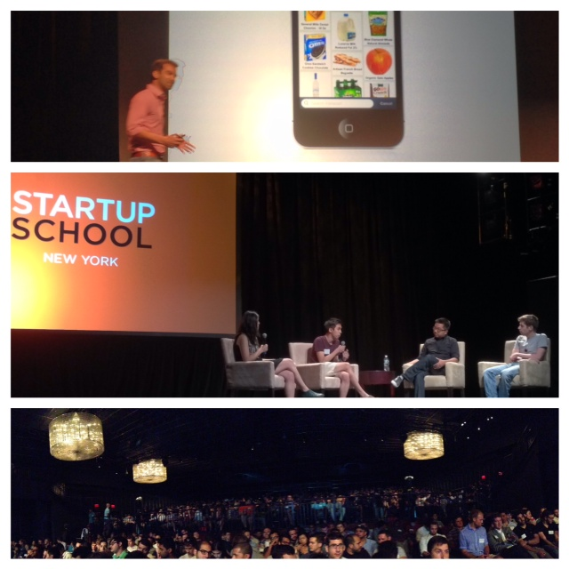

Apart from my day job, I pursue a broad range of personal interests including mentoring startup teams, participating and organising hackathons, mentoring UX Designers (part of IXDA), as well as baking sourdough bread (for real!). Check out my food thinking experiments on Instagram.
---
Master's Thesis
2019
I finally finished and done with my Master, which is completed as a joint degree from Steinbeis Hocschule (Berlin, Germany) and Columbia University (USA). The topic of Master's Thesis on AI-Driven Application for Experience Design. Ask me about this the next time you meet me. :)
Guest Lecture at Academy Xi
Sydney (2019 - present)
I often invited as a guest lecturer for UX students at Academy Xi in Sydney on a various topic around experience design, conversation design on smart devices, and conversational UI design (chatbot).
Chatbot for Stake Australia
2017
I created a Lead Generation Chatbot for Stake, a Sydney-based FinTech startup that offer zero trading for US-listed stocks. This is a personal pro-bono work initiated as part of my ongoing learning experimentation with emerging technology. The Stake Chatbot was nominated in Top 10 Global Chatbot Competition by Chatfuel in 2017.
NASA SpaceApps Challenge
2017
1st winner in Sydney and Global Nominations under Data Concierge category. We created an AI-Driven, virtual space buddy for kids.
2016
1st Winner in Sydney and Top 5 Global Nomination in 2016, we created WEB VR Educational Game.
Immersive Hack
Sydney (2016)
I volunteered to be part of the organising team of Sydney's first AR/VR hackathon, as well as giving participants lecture on the topic of UX design in VR.
GovHack Host
Sydney (2015 & 2016)
I volunteered to lead the organising effort of GovHack in Sydney as well as mentoring participants in UX design related topic.
Guest Lecture at General Assembly
Sydney (2015 - present)
I often invited as a guest lecturer for UX students at General Assembly on a various topic around experience design, VR experience, and conversational UI design.
Strategic Advisor for Berlin Startup
July 2014 ~ Jan 2016
I was appointed as Strategic Advisor for Toywheel (presently known as GameWheel, a Berlin-based startup focusing in children education space. I led the effort to secure EUR500K funding from SeedCamp Europe in 2015.
In this capacity I assist Toywheel in pivoting to create new product and align the team focus toward their new goals, which includes defining the product roadmap, creating actionable task lists, as well as providing overarching UX and design leadership.
June 18, 2014
I was invited to attend yCombinator Startup School in New York this summer.
It was an amazing experience to be able to meet so many distinguish founders and learned about their experience in starting and running a startup -- what went wrong, what surprised them, and what happened as their companies grew.
Some notable speakers were Zach Sims (Founder | Code Academy), Apoorva Mehta (Founder | Instacart), David Lee (Founder | SV Angel), Shana Fisher (High Line Venture Partners, Board Partners of Andressen Horowitz), Kathryn Minshew (Founder | The Muse), Chase Adam (Founder | Watsi), and Fred Wilson (Partner | Union Square Ventures).

← Back to archive